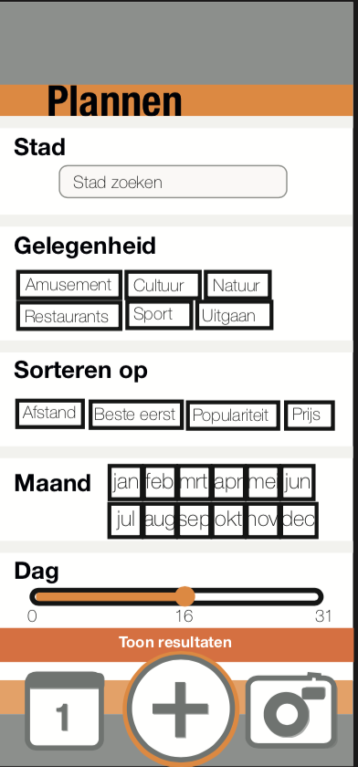
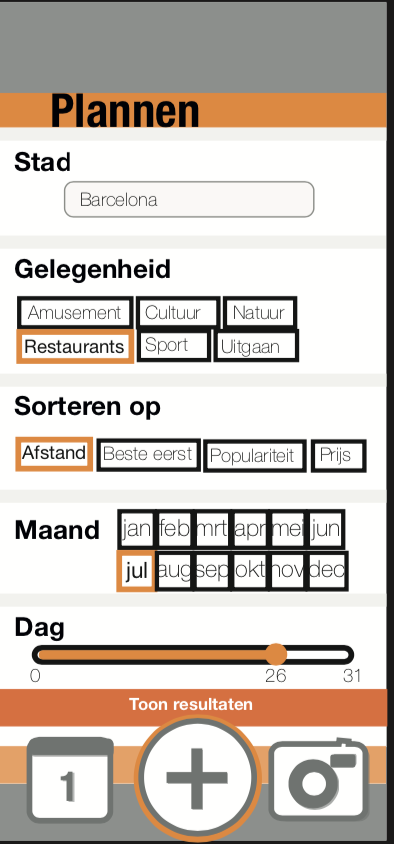
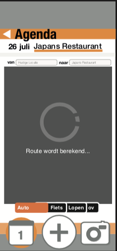
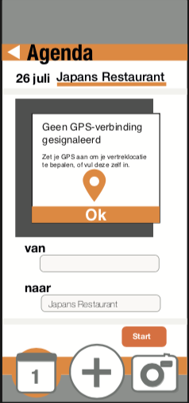
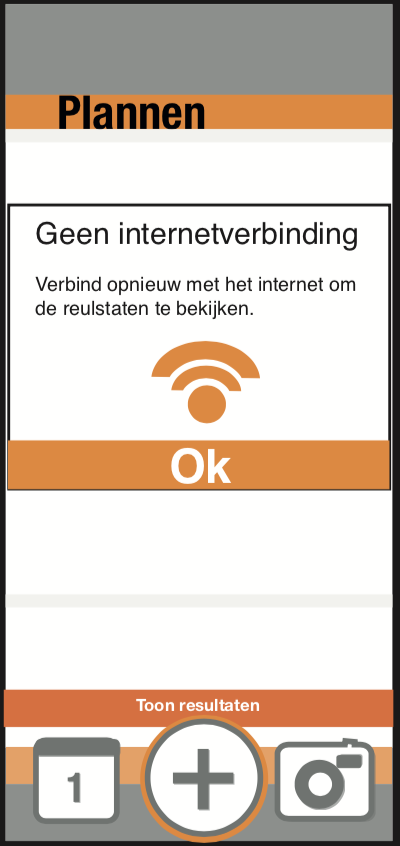

Design Patterns: Reis-app
Welk cijfer geef je deze opdracht?
Voor het vak Design Patterns heb ik een app ontworpen die je helpt voor, tijdens en na je vakantie om de beste ervaringen te beleven. Deze schermen laten in een paar stappen zien wat de ontwerpproblemen zijn die ik heb opgelost.
Empty State
Ideal State
Partial State
Error State 
Ideal State
Error State
De verschillende states laten zien hoe de app reageert op momenten waar de app niet optimaal werkt, en wanneer dit wel het geval is. Dit vak heb ik uiteindelijk afgerond met een 7
Voor de vakantie: Stel je eigen reis samen door te kijken wat er allemaal in de buurt te doen is, en door dit toe te voegen aan je agenda.
Tijdens de vakantie: Tijdens je vakantie kun je gebruik maken van de routes die de app aangeeft. Ook kun je kiezen met welk vervoer je wilt gaan.
Na de vakantie: Na de vakantie kun je herinneringen terugkijken in de app, en je beoordeling achterlaten!